Project 06
Dance Hall
This facility is designed to serve as a ballet studio during the day and a nightclub after hours. The spaces involve movement and interaction — lounge, dining, and viewing areas are incorporated into the circulation to encourage camaraderie, with the massing extrapolated from the form of a basketball jump.
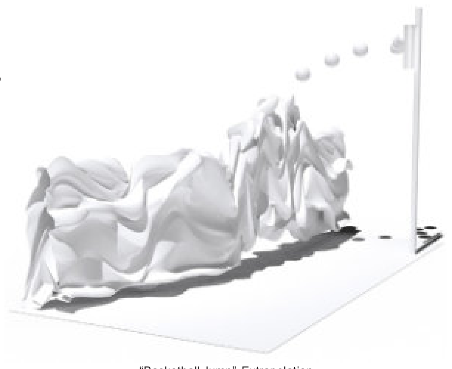

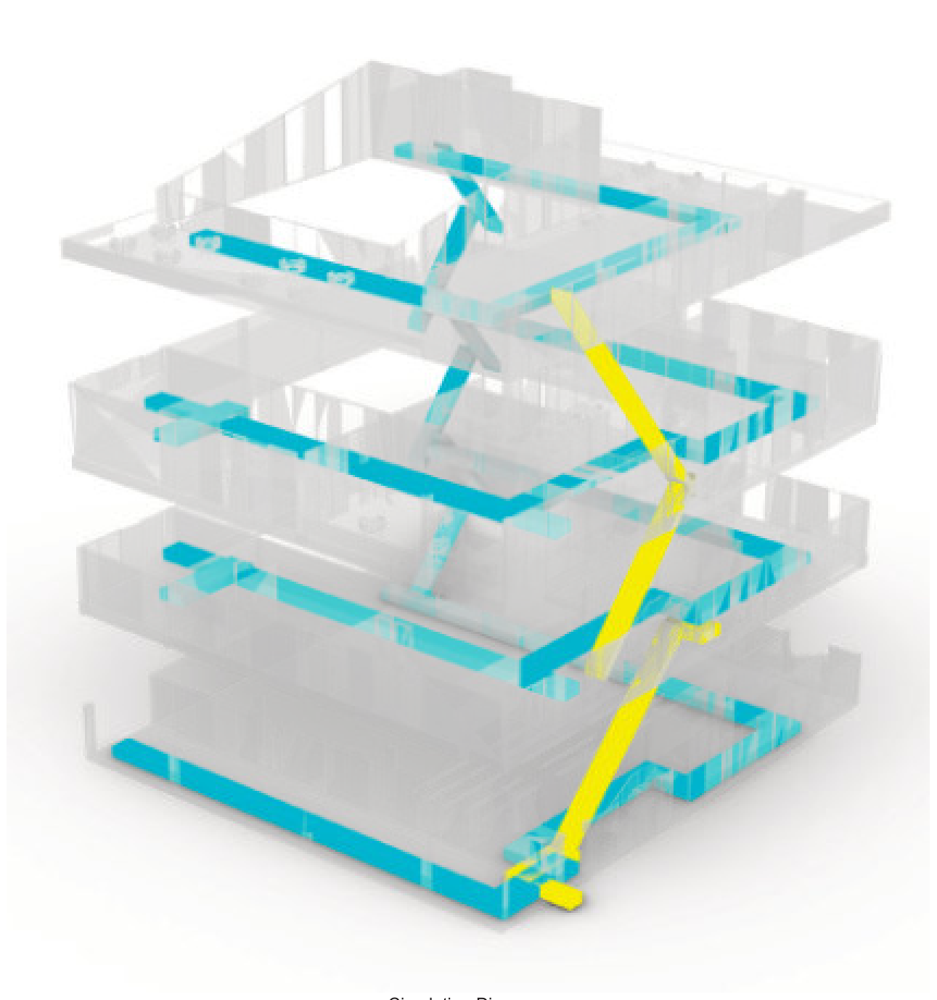
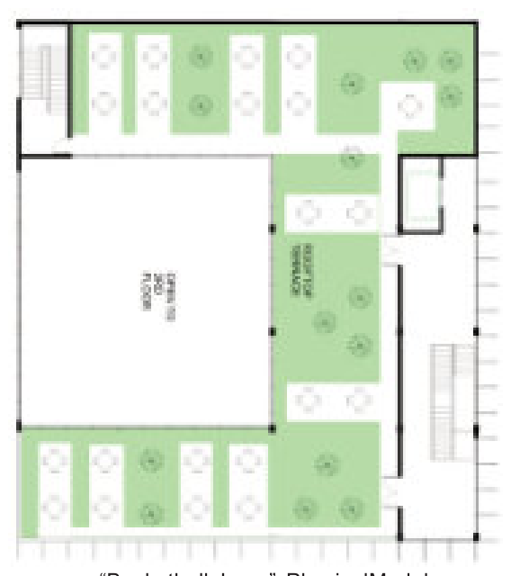
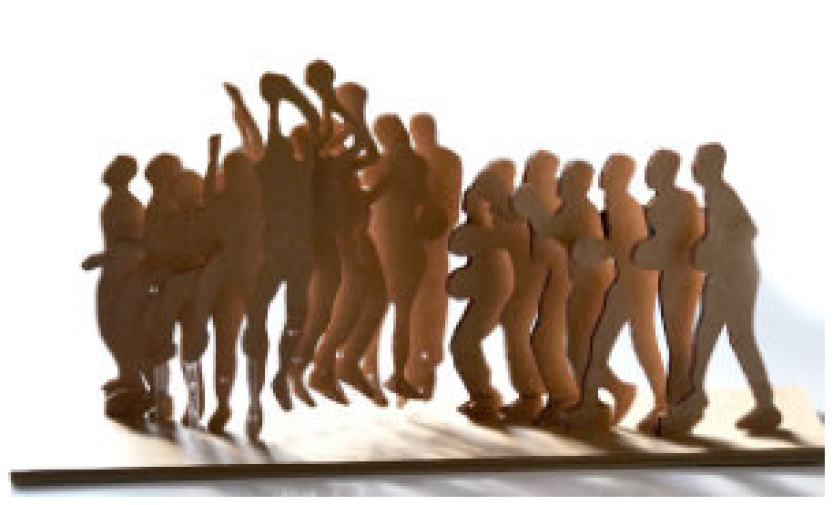
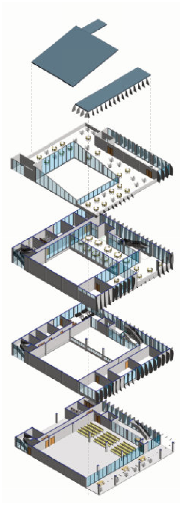
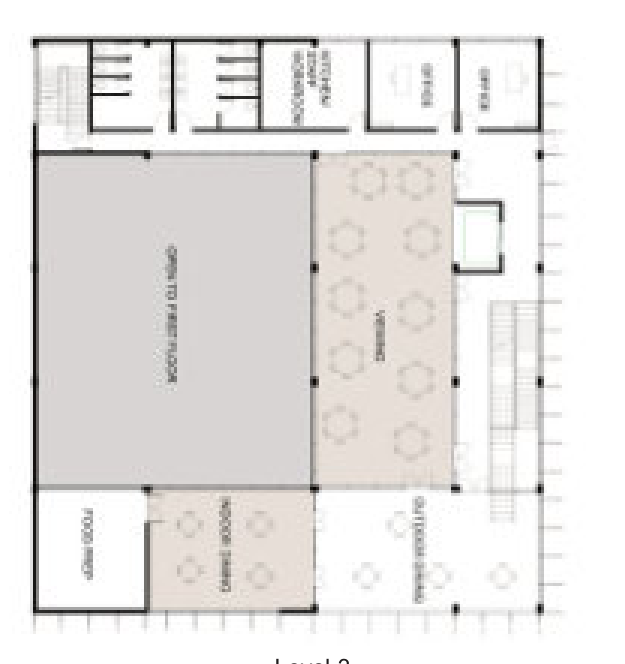
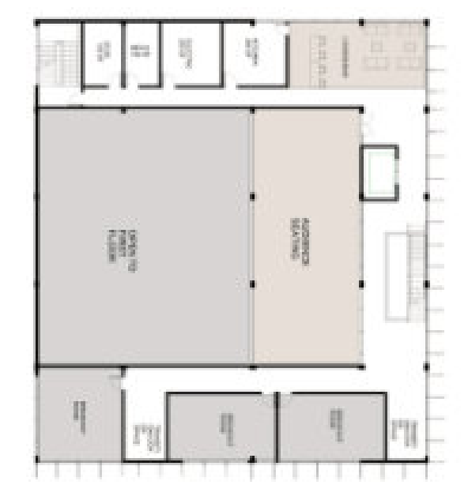
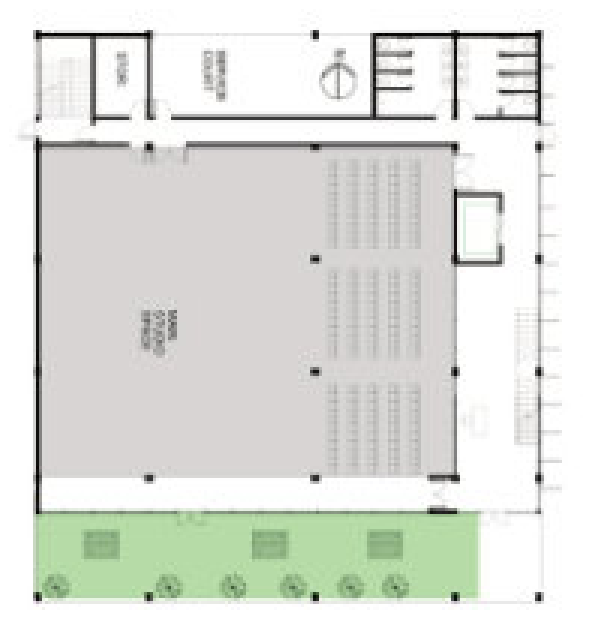
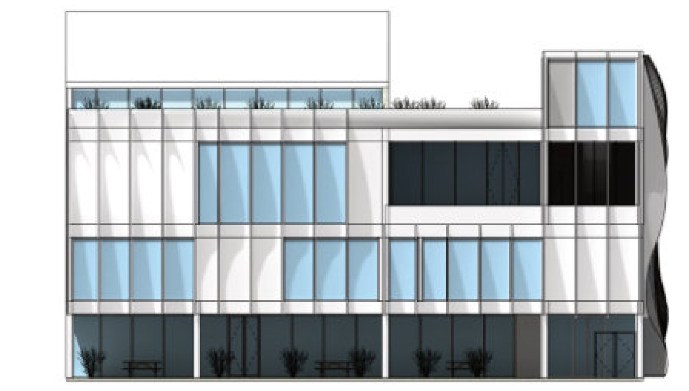
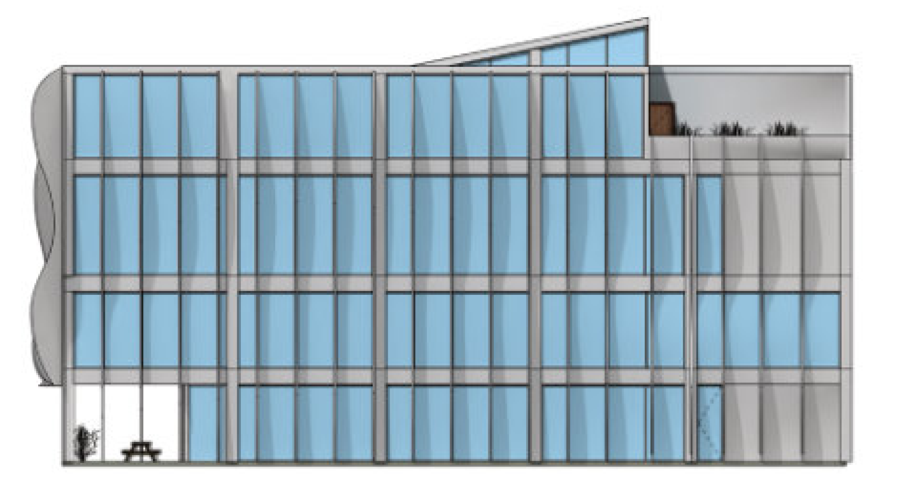
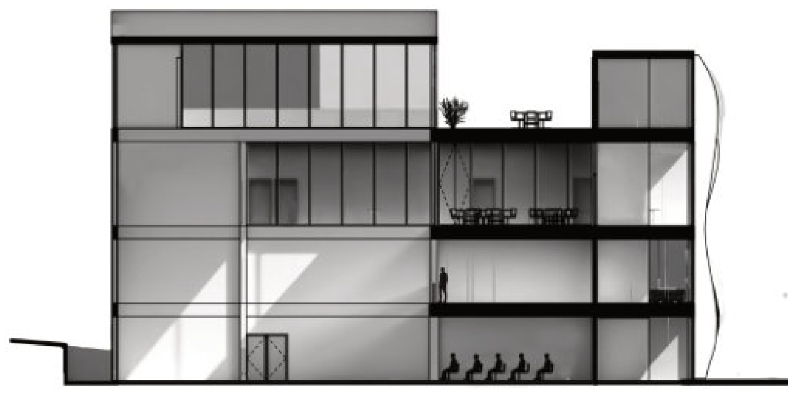
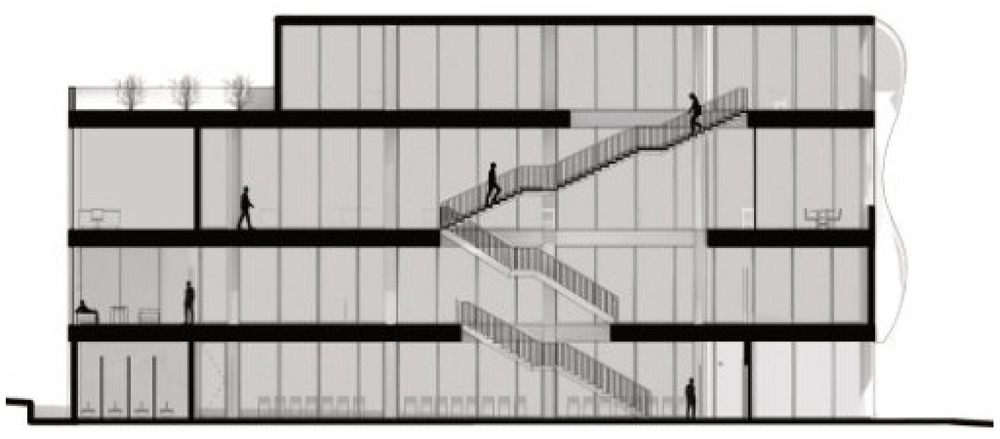
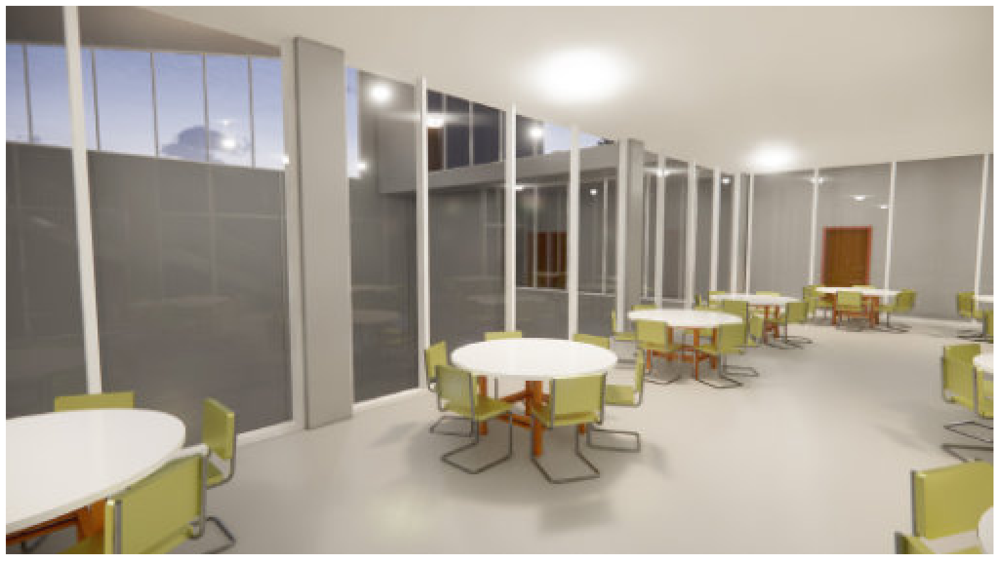
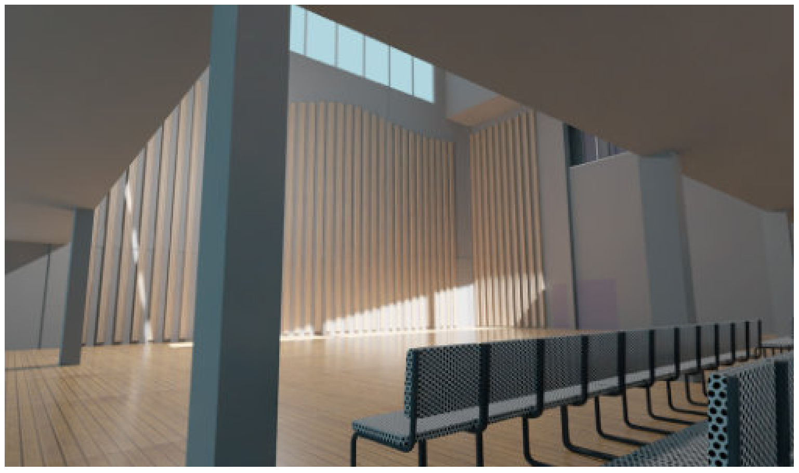